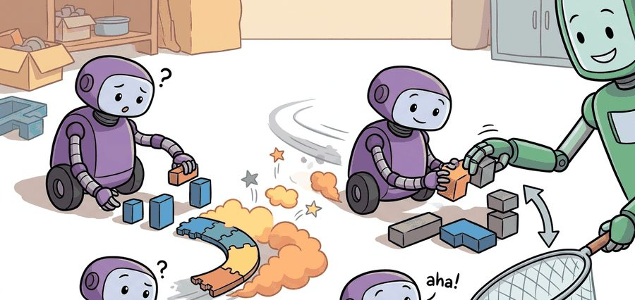
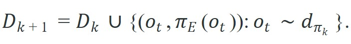
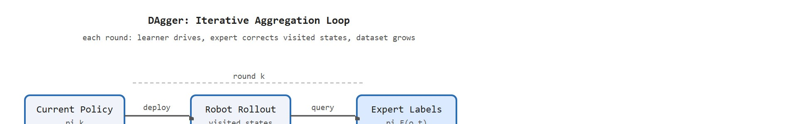

"The learner drove; the expert labeled where it actually went. One loop at a time, the map of recoverable states grew."
Section 21.3

This section assumes familiarity with behavior cloning and the distribution-shift problem introduced in section 21.2. DAgger's core contribution is a direct fix to the covariate-shift failure described there, so the compounding-error analysis in section 21.2 is the required starting point. The aggregation strategy developed here is extended in section 21.4, where inverse reinforcement learning recovers a reward signal rather than direct action labels, making explicit what the expert is optimizing.
A robot trained on fifty perfect warehouse demonstrations fails the moment it drifts two centimeters off the demonstrated path: it has never seen that state, so it has no idea how to recover. DAgger breaks this trap by deploying the learner, watching where it actually goes, and then asking the expert to label those real, messy states. Each iteration the policy ventures a little further from safety, the expert labels the recovery, and the dataset grows to cover exactly the territory the agent needs. Right now, as embodied systems move from lab demos to unscripted environments, this feedback loop is the practical bridge between polished demonstrations and robots that can actually handle the unexpected. This section implements the aggregation loop, analyzes the compounding-error bound it defeats, and explains why interactive labeling beats passive data collection for real deployment.
Picture a self-driving prototype that handles the highway flawlessly until the first time it drifts a half-lane off center, then has no idea what to do because no human driver in its training data ever started from there: DAgger is the fix that lets the learner generate those scary states itself and asks the expert to label the way back. Figure 21.3A sketches the iterative loop at a glance: deploy the current policy, query the expert on visited states, aggregate, and retrain. The section defines the object of study, connects it to the agent loop, and tests it with a compact implementation.
Concretely, "aggregation" means the training set never shrinks or resets between rounds: round $k$'s dataset $\mathcal{D}_k$ is the union of every prior round's expert-labeled pairs plus the newly labeled states from round $k$, so the policy at round $k$ is always retrained on the full history, not just the latest batch. This is the mechanical answer to "how do I actually use DAgger": collect a seed demonstration set, and at each subsequent round append (never replace) new expert-labeled corrections before retraining from scratch or fine-tuning on the growing union.
The key question in DAgger and dataset aggregation is practical: what must the agent know, what can it observe, what action is available, and what evidence shows that the action worked under the stated conditions?
Two terms recur throughout this section and are worth pinning down before the theory: covariate shift (the mismatch between the state distribution a policy was trained on and the distribution it actually encounters once deployed) is the disease, and closed loop (the policy's own actions determine its next observation, rather than following a pre-recorded, fixed sequence of states) describes the setting where that mismatch compounds turn after turn.
A representation earns its place when it changes the measurable action interface. In dagger and dataset aggregation, the reader should keep asking which decision becomes easier, safer, or more reliable.
Before the aggregation loop runs, fix the interface DAgger will iterate on so each round is comparable to the last. On a Franka Panda running robomimic's Can task in MuJoCo, that means pinning the observation (wrist-camera RGB plus 7-DoF joint positions), the action (end-effector delta pose at 20 Hz), the physics timestep (2 ms), and the intervention flag schema before round 0. If any of these shifts between rounds, the expert's corrections from round 1 were given under different dynamics than round 3 measures, and the intervention-rate curve stops being a clean signal.
DAgger's mechanism is the mismatch between two state distributions: $d_{\pi_E}$, the states the expert visited, and $d_{\pi_k}$, the states the learner's policy actually reaches (that is, the distribution induced by running the current policy $\pi_k$ in closed loop, not the expert's recorded trajectories). Behavior cloning only ever sees $d_{\pi_E}$, so it has no supervision on the wrist configurations a drifting Panda gripper drifts into. DAgger closes the gap by sampling observations from $d_{\pi_k}$ during live rollout and pairing each with the expert's action $\pi_E(o_t)$. The log that reveals a broken handoff is the per-round fraction of learner-generated observations: if it stays near zero, the rollout is still expert-driven and no out-of-distribution states are being labeled.
For DAgger and dataset aggregation, keep one concrete rollout in view. A sensor reading becomes an estimate, the estimate constrains an action, the action changes the world, and the next observation confirms or contradicts the assumption. The section's idea is useful only if it improves that loop.
from pathlib import Path
dataset_root = Path("robot_demos")
for episode in sorted(dataset_root.glob("episode_*")):
print("inspect", episode.name)
print("next step: convert demonstrations to the LeRobotDataset format")Expected output: the printed trace for DAgger and dataset aggregation should expose the method configuration, the measured evidence field, and the failure label. If one of those fields is missing or unchanged under the perturbation, the example is not yet an evaluation artifact.
Use LeRobot or custom ROS 2 logging for aggregation, but keep round ID, policy checkpoint, expert label source, intervention reason, and rollout seed in the dataset so improvement is attributable.
DAgger fixes the distribution problem by collecting labels on states visited by the learner. At iteration $k$, the current policy $\pi_k$ rolls out, the expert labels the visited observations, and the aggregate dataset grows, as Figure 21.3B traces step by step:


DAgger reduces imitation learning to online learning, a setting where the learner updates its policy after each round using only the data seen so far, rather than a single fixed batch. If the supervised learner achieves low regret, meaning its cumulative prediction error across rounds stays close to the best fixed policy chosen in hindsight, across the aggregated datasets, the final policy avoids the quadratic error growth that cripples behavior cloning. Consider a 100-step trajectory. Behavior cloning makes a small position error at step 10. That error moves the robot into a state the expert never visited, where the cloned policy has no reliable supervision. Each subsequent action compounds the error. By step 50 the robot is in entirely uncharted territory. The error grows as $O(\epsilon T^2)$, where $\epsilon$ is the per-step error rate. At 1% per-step error over 100 steps, behavior cloning accumulates roughly 100 compounding errors. DAgger holds that count to about 1. That gap is the quadratic cliff that aggregation removes. It explains why DAgger succeeds on tasks where pure cloning collapses, even with identical expert demonstrations.
So far: behavior cloning's per-step errors compound quadratically because each mistake pushes the robot into a state the expert never labeled, while DAgger's online-learning aggregation holds that growth to linear by having the expert label exactly the states the learner actually visits.
This translates directly to data volume. Reaching reliable performance on a 50-step manipulation task typically demands around 50,000 behavior-cloning episodes to statistically cover enough recovery states, though the exact figure depends heavily on task complexity and the expert's consistency. Three to five DAgger rounds on the same task converge in roughly 300 labeled episodes in similar settings, because every label lands exactly where the learner actually fails.
Ross et al. (2011) proved that after $N$ DAgger rounds the policy's performance degrades at most linearly in $\epsilon$: $O(\epsilon T)$, the same rate as a supervised learner trained on i.i.d. data, where i.i.d. (independent and identically distributed) means each training example is drawn independently from the same fixed distribution, the standard assumption behind ordinary supervised learning guarantees. DAgger achieves this by collecting labels at the states the learner actually visits, so the policy learns to recover from its own mistakes.
Trace the aggregation loop on a tiny lane-following task with a scripted expert and an intervention budget. Start with 100 expert-labeled frames in $\mathcal{D}_0$ and a per-step error rate that the learner cuts each round.
Round 0: Train $\pi_0$ on the 100 seed frames. Roll out for 200 steps. The learner drifts off-lane, and the supervisor overrides on 60 of 200 steps, so the intervention rate is $60/200 = 0.30$. Query the expert on the 200 visited observations and add the 200 new labeled pairs. Now $|\mathcal{D}_1| = 100 + 200 = 300$.
Round 1: Retrain to get $\pi_1$ on the 300 frames. Because $\mathcal{D}_1$ now contains the off-lane recovery states, the learner stays closer to center. Override count drops to 24 of 200 steps, an intervention rate of $24/200 = 0.12$. Add 200 more labeled pairs: $|\mathcal{D}_2| = 300 + 200 = 500$.
Round 2: Retrain to get $\pi_2$ on the 500 frames. Override count drops to 9 of 200, a rate of $9/200 = 0.045$. The monotone fall $0.30 \to 0.12 \to 0.045$ is the signal that the aggregated states are covering real failure modes. Stop when the rate plateaus or the held-out closed-loop success stops climbing.
A cloned policy trained only on expert trajectories is a map of roads the expert drove; DAgger is the process of adding every wrong turn the learner actually took.
NVIDIA's DAVE-2 self-driving pipeline used an interactive correction loop in the same spirit as DAgger: the network drove the car while human safety drivers took over whenever it drifted, and those recovery frames were folded back into the training set. This is precisely the off-distribution coverage that pure behavior cloning from clean human driving could never supply, and it let the system handle lane departures it would otherwise have never seen.
The DAVE-2 takeovers were not just training data; they were also the clearest live measure of whether the loop was helping, which points to the metric that governs every DAgger deployment. The practical signal is the intervention rate: if a human supervisor must take over control less often in round $k+1$ than in round $k$, the aggregation is working. The engineering cost is expert access during learner rollouts, which is easy in simulation, expensive with humans, and safety-critical on hardware.
On a physical robot, a rising intervention rate carries direct consequences beyond a score: each takeover strains actuators through abrupt velocity changes, risks contact with obstacles the policy did not anticipate, and introduces latency spikes that can desynchronize the control loop. A policy that requires frequent intervention on hardware cannot be deployed unsupervised, so intervention rate is the gate between a lab result and a real product.
You compute the intervention rate per round by logging a binary flag at each timestep: 0 when the learned policy drives, 1 when the supervisor overrides. The round's rate is the fraction of timesteps flagged. Comparing round $k$ to round $k+1$ on identical rollout seeds isolates the effect of the newly aggregated labels from task-difficulty variation. A monotone decline across rounds confirms that the added states genuinely cover the learner's failure modes rather than adding redundant expert demonstrations.
A common assumption is that DAgger is simply a technique for collecting more expert demonstrations offline, treating it as a data-augmentation step that can be done before any robot deployment. This is wrong: DAgger's correction mechanism only works when the expert labels states that the learner's own policy actually visits during live rollout. An offline corpus of additional demonstrations still samples the expert's distribution, not the learner's, so the covariate-shift problem remains unsolved. The correct mental model is an interactive feedback loop: the learner drives, drifts, and the expert corrects exactly the states reached by that drift, which are states that no amount of pre-collected expert data can cover.
Think of learning to navigate a city by watching a taxi driver's recorded trips. No matter how many recordings you study, the moment you take a wrong turn you are on a street that never appeared in any video, and every subsequent turn compounds the confusion. DAgger is like having the taxi driver ride along on your practice drives: each time you drift off the known route, the driver points out the correct next street from exactly where you ended up. After enough such rides, the map of "what to do when lost" fills in, and a single wrong turn no longer cascades into being hopelessly off course.
Following those steps faithfully still leaves one detail that decides whether the resulting dataset can be trusted later: knowing which policy generated each state. Code Fragment 21.3.2 shows the bookkeeping that matters in a DAgger run: each newly labeled state must record the policy version that produced it.
# Track which learner version created each queried observation.
# This makes the aggregate dataset auditable across DAgger rounds.
rounds = [
{"policy": "pi_0", "queried_states": 120, "expert_labels": 120},
{"policy": "pi_1", "queried_states": 80, "expert_labels": 80},
{"policy": "pi_2", "queried_states": 45, "expert_labels": 45},
]
total_labels = sum(r["expert_labels"] for r in rounds)
print("DAgger rounds:", len(rounds))
print("aggregate expert labels:", total_labels)policy field that links each queried state to the learner that produced it. That provenance is essential when a later audit asks whether improvement came from better coverage, more labels, or a changed rollout policy.The imitation library implements behavior cloning and DAgger on top of Stable-Baselines3 policies. The library route handles rollout storage, policy updates, and expert-query loops, but the builder still must define safe expert access and a held-out closed-loop evaluation panel.
When using the imitation library's DAggerTrainer, check the beta_schedule parameter before your first round: the default "constant" schedule keeps beta=1.0, meaning the rollout uses the expert exclusively and the learner never drives. Set beta_schedule="linear" (or pass a custom BetaSchedule) so the learner's own actions appear in rollouts from round 1 onward, which is the only way DAgger can cover the out-of-distribution states that behavior cloning misses. A fast sanity check is to log trainer.round_num and confirm that the fraction of learner-generated observations in trainer.latest_trajs rises across rounds; if it stays near zero, the schedule is still blocking the learner from driving.
DAgger assumes the expert can label any state the learner visits, but this assumption fails in three common situations. First, if the learner drifts into physically unsafe states (a robot arm near a collision, a vehicle off-road), the expert cannot safely label them and the aggregation loop must be interrupted. Second, if the human expert is inconsistent across rounds (labeling the same state differently in round 1 and round 3), the aggregated dataset contains contradictory supervision and the policy oscillates rather than converges. Third, in high-dimensional continuous domains such as dexterous manipulation, the learner can visit states so far from the expert's prior experience that the expert label is a guess, not a correction: in the robomimic Can task, teleoperated labels on learner-induced wrist configurations often disagree with each other by more than 15 degrees of joint angle, which is enough to cause grasping failure. When any of these conditions holds, consider SafeDAgger (which filters unsafe query states) or EIL (Ensemble-based Interactive Learning, which weights expert labels by confidence) rather than vanilla DAgger.
The common mistake in DAgger and dataset aggregation is to celebrate the component score before checking the closed-loop handoff. The failure usually appears at the boundary: stale state, wrong frame, delayed action, saturated actuator, or metric that ignores the real task cost.
A robot learning engineer applying dagger and dataset aggregation starts by recording the robot body, camera setup, action units, operator source, and split policy for every episode. That record makes it possible to compare LeRobot with a baseline without changing the task definition midstream.
A good embodied system makes dagger and dataset aggregation visible twice: once in the design sketch and once in the replay artifact. The second view keeps the first one honest.
Active directions in interactive imitation learning (2024-2026):
1. Passive-to-active distillation with foundation priors. Rather than querying a human expert at every aggregation round, recent work uses a large pretrained vision-language-action (VLA) model as a cheap oracle: the learner rolls out, the VLA labels visited states, and only the states where the VLA is uncertain are escalated to a human. HuggingFace's LeRobot team demonstrated this "VLA-in-the-loop DAgger" pattern on SO-101 arms in 2025, reportedly cutting human labeling time by roughly 60% while matching or exceeding human-only DAgger on dexterous peg-in-hole tasks (as of mid-2025; no peer-reviewed paper has been published at time of writing).
2. Safe DAgger for contact-rich manipulation with real-time risk filters. A central gap in vanilla DAgger is that the learner can drift into physically dangerous states before the expert can intervene. The 2024 SafeDAgger-v2 line of work (Hoque et al., CoRL 2024) adds an online risk classifier that pauses rollouts when the predicted contact force exceeds a learned threshold, then resumes after the expert repositions the arm. The key advance over the original SafeDAgger is that the risk classifier is trained jointly with the policy, so its calibration improves across aggregation rounds rather than staying fixed.
3. Offline-online aggregation with diffusion policies. Diffusion Policy (Chi et al., RSS 2023) showed that score-matching objectives generalize better than behavior cloning on multi-modal demonstration data, but its interaction with iterative aggregation was underexplored. Work from the Robotic Manipulation Lab at Carnegie Mellon (2024-2025) showed that running DAgger-style rollouts with a diffusion policy and re-scoring the aggregated data with the denoising network's own uncertainty produces tighter coverage than round-based retraining, especially on tasks with multiple valid grasp modes.
Open problem for a PhD student: All current DAgger variants assume the expert can provide a single correct action label for each visited state, but in contact-rich tasks the "correct" action is a distribution: many wrist orientations lead to a successful grasp from a given configuration. No current aggregation method propagates that label uncertainty back into the policy update, so the policy collapses to the expert's mean response even when the mean is near a constraint boundary. An open direction is to develop an aggregation loop where the expert provides a small set of acceptable actions per state (or a preference ranking), and the policy update preserves the full feasible set rather than point-fitting the mean.
Can you name the observation, state estimate, action, success metric, and most likely failure mode for dagger and dataset aggregation? If not, the system boundary is still too vague.
DAgger earns its keep only under a closed-loop contract: the observation stream, the state estimate, the action representation, the timing budget, and the evaluation artifact. Skip that contract and a model looks capable in a notebook, then fails the first time a sensor drops a frame or a controller saturates.
For DAgger and dataset aggregation, separate the conceptual claim, the systems claim, and the evidence claim. A plausible mechanism, a clean interface, and a closed-loop result are different claims; the section should keep their evidence separate.
| Tool or Library | Role in the DAgger Loop | Builder Advice |
|---|---|---|
| Gymnasium | Rollout environment for simulation-based DAgger: the env's step() provides the next observation after the learner's action, and reset() seeds the distribution for each round. Works with CartPole and Fetch-Reach for smoke tests before moving to physics-heavy simulators. | Wrap the env in a RecordEpisodeStatistics wrapper so per-round intervention counts are logged automatically. Confirm the obs and action spaces match your policy's input/output shapes before the first round or the aggregation loop silently feeds wrong-shaped tensors. |
| PettingZoo | Multi-agent variant of Gymnasium used when DAgger involves a human-in-the-loop supervisor modeled as a second agent: the human's corrective actions appear on the supervisor agent's action channel while the learner drives. | Use only when the expert is modeled as a co-agent rather than an offline oracle. For single-robot manipulation tasks (Franka Panda pick-and-place), plain Gymnasium is simpler and avoids the turn-order bookkeeping that PettingZoo adds. |
| ROS 2 | Hardware aggregation bridge: publishes the learner's actions to the robot's joint trajectory controller, subscribes to the operator's joystick override topic, and timestamps every observation-action pair at the ROS clock so simulation-to-real timing differences are auditable. | Log each DAgger round as a separate ROS 2 bag with a /dagger_round metadata topic. On a Franka Panda running at 1 kHz control frequency, the bag grows roughly 200 MB per 100-second rollout; pre-allocate disk space or stream directly to a LeRobot dataset to avoid mid-round storage failures. |
| MuJoCo | Physics simulator for contact-rich DAgger tasks: models tendon-driven grippers, deformable objects, and ground-contact forces that Gymnasium's simpler envs approximate poorly. The robomimic Can and Square tasks run on MuJoCo and are standard DAgger benchmarks for wrist-camera manipulation. | Fix the MuJoCo timestep at 2 ms and the control frequency at 20 Hz before round 1. Changing either mid-experiment shifts the contact dynamics enough to invalidate aggregated labels from earlier rounds, since the expert's corrections were given under the old physics configuration. |
| LeRobot | Dataset storage and model training for DAgger: the LeRobotDataset format stores each episode with frame-level metadata (policy version, round index, intervention flag) that makes the aggregation history queryable. ACT and Diffusion Policy checkpoints train directly from the format. | Set episode_data_index metadata at write time to record which DAgger round produced each episode. Without this field, post-hoc analysis cannot separate the expert-only seed data from learner-induced aggregation rounds, making intervention-rate curves unreproducible. |
For DAgger and dataset aggregation, start with a small baseline that logs inputs, outputs, units, timestamps, and termination conditions before moving to Gymnasium or PettingZoo. The library run should keep the same artifact schema, so the comparison remains a same-task evaluation.
When DAgger and dataset aggregation fails, avoid labeling the whole method as weak. First assign the failure to perception, state estimation, planning, control, timing, data coverage, or evaluation. Then rerun one controlled perturbation that isolates the suspected cause. This pattern turns a disappointing rollout into a reusable diagnostic asset.
DAgger and dataset aggregation should be evaluated through four lenses: the learning objective, the robot interface, the data artifact, and the deployment failure mode. A demonstration is not a self-sufficient label; it is a trajectory sampled from an expert distribution that the learned policy will later disturb.
For DAgger, the workflow is iterative: deploy the current policy, query expert correction on visited states, aggregate the corrected dataset, retrain, and measure whether the intervention rate falls on matched rollouts.
DAgger changes the demonstration contract by adding states produced by the learner. Each aggregation round must record which policy generated the state and which expert corrected it.
| Agent Lens | Question To Answer | Concrete Evidence |
|---|---|---|
| Curriculum and depth | What concept is new here, and why does Part V need it? | A definition, a worked example, and a failure case tied to the perception-action loop. |
| Code and tools | Which maintained tool removes boilerplate after the from-scratch baseline? | LeRobot, robomimic, DAgger, behavior cloning, dataset aggregation evaluated against the same task contract. |
| Data and evaluation | What distribution produced the behavior, and where can it break? | Train, validation, and stress splits with explicit robot, camera, timing, and license metadata. |
| Publication quality | Can the reader reproduce the claim without hidden context? | Captions, bibliography cards, cross-links, and a same-artifact audit trail. |
Do not claim that dagger and dataset aggregation improves robot learning unless the baseline and the proposed method share the same robot, task split, reset distribution, success metric, and random seed policy. Otherwise the comparison may be measuring dataset difficulty rather than method quality.
For DAgger and dataset aggregation, modern imitation systems should be audited as synchronized robot data: images, proprioception, language, actions, timing, operator metadata, and covariate-shift checks.
Who: A robotics team reducing teleoperator interventions in a mobile manipulation task.
Situation: The engineer needs to decide whether dagger and dataset aggregation is ready for a weekly policy comparison across 120 demonstrations and 30 held-out rollouts.
Decision: For DAgger and dataset aggregation, keep the minimal imitation baseline and compare LeRobot or robomimic only on the same manifest, split, seed policy, and rollout evaluator.
Result: The artifact shows per-round intervention rate, newly covered states, correction labels, retrained checkpoint, and matched rollout success.
Lesson: DAgger earns trust when the aggregated data covers learner-induced errors and the same rollout panel shows fewer expert corrections.
Before leaving this section, write one sentence that links dagger and dataset aggregation to each of these connected chapters: Chapter 14: Reinforcement Learning Refresher, Chapter 23: Teleoperation and Data Collection, Chapter 34: Vision-Language-Action Models. If any link feels forced, the section needs a sharper boundary or a clearer prerequisite recap.
DAgger and dataset aggregation is useful when it makes the perception-action loop more reliable, not when it merely adds a more impressive model name.
Design a method-matched experiment for DAgger and dataset aggregation. Specify the environment, observation schema, action interface, metric, and one perturbation that targets the section's core assumption.
Goal: Empirically observe DAgger defeating covariate shift by measuring how the intervention rate drops across aggregation rounds, and contrast it with a frozen behavior-cloning baseline.
Tools needed: Python with gymnasium (CartPole-v1), scikit-learn or PyTorch for a small MLP policy, and NumPy. No GPU required; the whole experiment runs on a laptop CPU in well under 30 minutes.
Setup: Write a scripted expert (a simple PID or energy-based controller that balances the pole reliably). Collect 20 expert episodes as the seed dataset $\mathcal{D}_0$ and train policy $\pi_0$. Then run the DAgger loop: roll out the current policy for a fixed number of steps, but query the expert action on every visited observation, append those pairs to the dataset, retrain, and repeat for five rounds. Define an "intervention" as any timestep where the learner's action disagrees with the expert's action by class, and log the per-round intervention rate.
What to vary: (1) the number of rollout steps queried per round, (2) the seed dataset size (5 vs 20 vs 50 episodes), and (3) whether the learner drives during rollout (true DAgger) versus the expert driving (which collapses DAgger back to behavior cloning).
What to observe: Plot intervention rate and closed-loop episode length against round index. True DAgger should show a monotone decline in intervention rate and rising episode length, while the expert-driven variant stays flat: the same number of total labels, but no coverage of learner-induced states. That contrast is the entire point of the algorithm made visible in one chart.
Beginner (weekend): CartPole DAgger with Gymnasium. Build a minimal DAgger loop using the Gymnasium CartPole-v1 environment, a scripted expert (PID controller), and a small MLP policy; log intervention rate per round and confirm it falls monotonically. The key challenge is wiring the live rollout so the learner's own actions drive the cart while the expert labels each visited observation, rather than replaying a pre-collected dataset.
Intermediate (1 to 2 weeks): Manipulation DAgger with MuJoCo and LeRobot. Implement DAgger on the robomimic Can task in MuJoCo, storing each round's labeled episodes in a LeRobotDataset with round index and intervention flag metadata, then train an ACT policy checkpoint after each round and plot per-round closed-loop success rate. The key challenge is keeping the physics timestep and control frequency fixed across rounds so expert corrections from round 1 remain valid supervision in round 3.
Advanced (2 to 4 weeks): Hardware DAgger on a real robot with ROS 2. Deploy DAgger on a physical manipulator (for example a low-cost SO-100 arm running LeRobot) where a human operator provides corrections via joystick override, logging each rollout as a ROS 2 bag with a /dagger_round metadata topic and measuring intervention rate across five aggregation rounds. The key challenge is safety: detecting when the learner drifts into a state where labeling is physically unsafe and pausing the loop before querying the expert, which is the core problem that SafeDAgger addresses.
This section grounded dagger and dataset aggregation in an explicit robot-data contract: observations, actions, demonstrations, evaluation splits, and failure labels. The next reading step is Section 21.4, where the same contract is carried into the next technique or chapter.
This paper introduces DAgger, the standard fix for covariate shift in sequential imitation learning. Read it when behavior cloning fails after the policy visits states that the demonstrator rarely produced.
Pomerleau, D. (1989). ALVINN: An Autonomous Land Vehicle in a Neural Network. NeurIPS.
ALVINN is an early example of learning control from demonstrations and sensor inputs. It helps readers see that imitation learning's central distribution problem predates modern deep robot policies.
Mandlekar, A. et al. robomimic: A Framework for Robot Learning from Demonstration.
robomimic gives reusable datasets, baselines, and evaluation scripts for demonstration-based manipulation. It is the right tool when a section needs a reproducible behavior cloning or offline imitation baseline.
Hugging Face. LeRobot: Making AI for Robotics More Accessible.
LeRobot standardizes models, datasets, and training utilities for real-world robotics in PyTorch. It is especially useful for connecting small demonstration experiments to shared dataset formats on the Hugging Face Hub.
robomimic v0.1 Datasets Documentation.
The dataset documentation shows how demonstrations, task metadata, and evaluation splits are packaged for reproducible robot learning. Practitioners should read it before inventing a custom data layout.